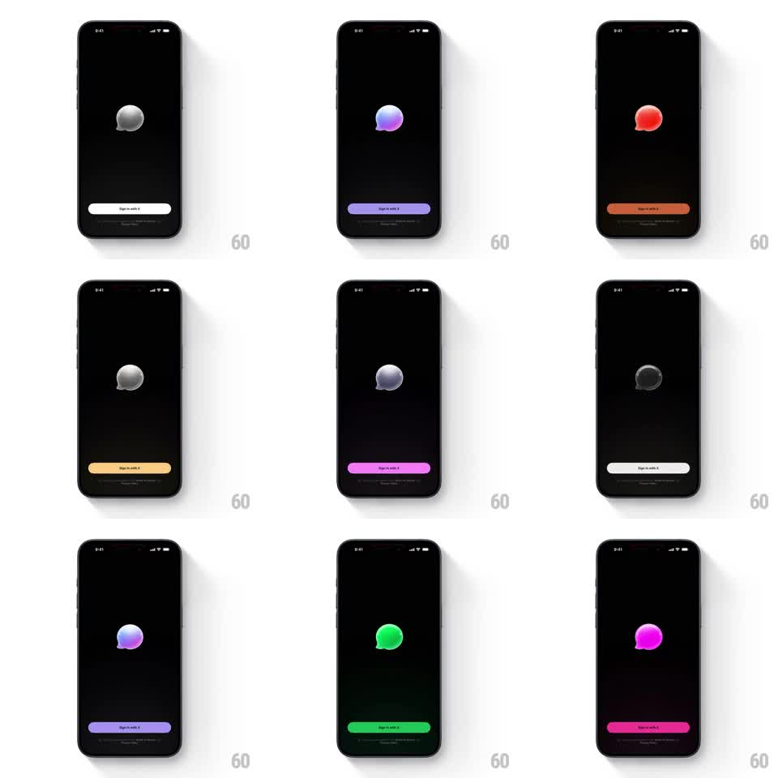

Media
Frame-by-frame

Rebuild this interaction 1:1: XChat's onboarding color cycle - tapping anywhere cycles the glassy 3D chat-bubble logo and the Sign in with X button through vivid theme colors with a matching floor glow.

Rebuild this interaction 1:1: XChat's onboarding color cycle - tapping anywhere cycles the glassy 3D chat-bubble logo and the Sign in with X button through vivid theme colors with a matching floor glow. ## Integration Integration: stack-agnostic spec - springs given as stiffness/damping, timed motions as duration + curve; map every value to your framework and animation library of choice. ## Scene Pure black onboarding: a 3D chat-bubble logo floating center (glossy, softly lit), a full-width "Sign in with X" button near the bottom, and small legal text under it. ## Motion spec Pattern: tap-to-cycle theme colors across logo, button, and ambient glow. - On tap, the logo's material hue tweens to the next theme (300ms, ease-out) - white, purple, red, yellow, magenta, green, pink, back to white. - The button fill tweens to the same color in sync, and its label flips between dark and light for contrast. - A soft radial glow on the "floor" beneath the logo bleeds in the theme color (fades in 400ms, breathes +/- 10% opacity, 3s). - The logo reacts to the tap with a squash-and-settle (scale 0.92 -> 1, spring ~320/14) and a slow idle float (+/- 5px, 3s) between taps. - Rapid taps queue cleanly - each cycle completes its color tween. ## Calibration - Colors are saturated but the materials stay glassy - highlights remain white, not tinted. - The whole screen commits to each theme: logo, button, glow, no stragglers. ## Reduced motion Colors crossfade (200ms); no squash, static logo. ## Don't miss - The logo's specular highlight stays put as the hue shifts - it reads as one object being relit. - Button text contrast flips are instant, not tweened.